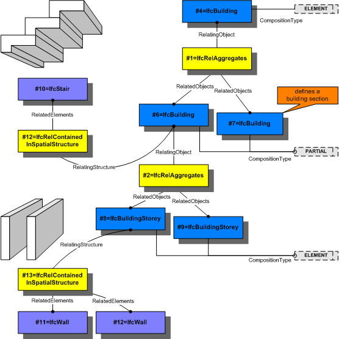

5.4.3.52 IfcRelContainedInSpatialStructure
5.4.3.52.1 Semantic definition
This objectified relationship, IfcRelContainedInSpatialStructure, is used to assign elements to a certain level of the spatial project structure. Any element can only be assigned once to a certain level of the spatial structure. The question, which level is relevant for which type of element, can only be answered within the context of a particular project and might vary within the various regions.
The containment relationship of an element within a spatial structure has to be a hierarchical relationship; an element can only be contained within a single spatial structure element. The reference relationship between an element and the spatial structure need not be hierarchical; that is, an element can reference many spatial structure elements.
Occurrences of the same element type can be assigned to different spatial structure elements depending on the context of the occurrence.
Figure 5.4.3.52.A shows the use of IfcRelContainedInSpatialStructure to assign a stair and two walls to two different levels within the spatial structure.

5.4.3.52.2 Entity inheritance
-
- IfcRelContainedInSpatialStructure
- IfcRelConnectsElements
- IfcRelConnectsPortToElement
- IfcRelConnectsPorts
- IfcRelConnectsStructuralActivity
- IfcRelConnectsStructuralMember
- IfcRelCoversBldgElements
- IfcRelCoversSpaces
- IfcRelFillsElement
- IfcRelFlowControlElements
- IfcRelInterferesElements
- IfcRelPositions
- IfcRelReferencedInSpatialStructure
- IfcRelSequence
- IfcRelServicesBuildings
- IfcRelSpaceBoundary
5.4.3.52.3 Attributes
| # | Attribute | Type | Description |
|---|---|---|---|
| IfcRoot (4) | |||
| 1 | GlobalId | IfcGloballyUniqueId |
Assignment of a globally unique identifier within the entire software world. |
| 2 | OwnerHistory | OPTIONAL IfcOwnerHistory |
Assignment of the information about the current ownership of that object, including owning actor, application, local identification and information captured about the recent changes of the object, |
| 3 | Name | OPTIONAL IfcLabel |
Optional name for use by the participating software systems or users. For some subtypes of IfcRoot the insertion of the Name attribute may be required. This would be enforced by a where rule. |
| 4 | Description | OPTIONAL IfcText |
Optional description, provided for exchanging informative comments. |
| Click to show 4 hidden inherited attributes Click to hide 4 inherited attributes | |||
| IfcRelContainedInSpatialStructure (2) | |||
| 5 | RelatedElements | SET [1:?] OF IfcProduct |
Set of products, which are contained within this level of the spatial structure hierarchy. |
| 6 | RelatingStructure | IfcSpatialElement |
Spatial structure element, within which the element is contained. Any element can only be contained within one element of the project spatial structure. |
5.4.3.52.4 Formal propositions
| Name | Description |
|---|---|
| WR31 |
The relationship object shall not be used to include other spatial structure elements into a spatial structure element. The hierarchy of the spatial structure is defined using IfcRelAggregates. |
|
|
5.4.3.52.5 Concept usage
| Concept | Usage | Description | |
|---|---|---|---|
| IfcRoot (2) | |||
| Revision Control | General |
Ownership, history, and merge state is captured using IfcOwnerHistory. |
|
| Software Identity | General |
IfcRoot assigns the globally unique ID. In addition it may provide for a name and a description about the concept. |
|
| Click to show 2 hidden inherited concepts Click to hide 2 inherited concepts | |||
5.4.3.52.6 Formal representation
ENTITY IfcRelContainedInSpatialStructure
SUBTYPE OF (IfcRelConnects);
RelatedElements : SET [1:?] OF IfcProduct;
RelatingStructure : IfcSpatialElement;
WHERE
WR31 : SIZEOF(QUERY(temp <* RelatedElements | 'IFC4X3_ADD2.IFCSPATIALSTRUCTUREELEMENT' IN TYPEOF(temp))) = 0;
END_ENTITY;